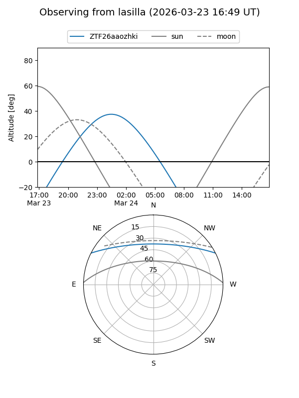
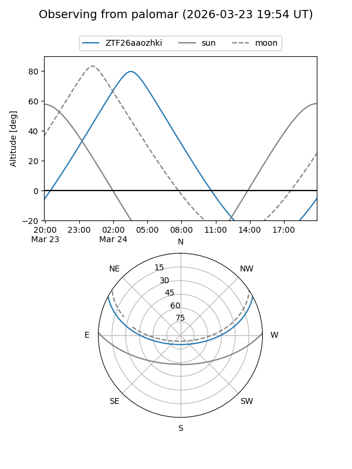

ZTF26aaozhki
Target ZTF26aaozhki at 2026-03-24 03:57
Aliases and brokers:
FINK: link
Lasair: link
ALeRCE: link
alt names
ZTF26aaozhki (ztf,fink_ztf)
Coordinates:
equatorial (ra, dec) = 117.4806,+23.30174
equatorial (HMS+DMS) = 07:49:55.35,+23:18:06.28
galactic (l, b) = (197.4388,+22.74978)
Flags:
Photometry:
last ztfg=19.63
1 ztfg detections
Lightcurve
Visibility


Additional plots